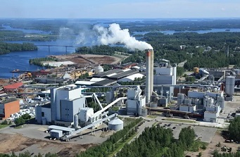

Lappeenrannan teollistuminen
Lappeenranta on tunnettu teollisuuskaupunkina, ja sen teollistuminen alkoi 1800-luvun puolivälissä. Ensimmäisenä alkoi kehittyä tekstiiliteollisuus, joka seurasivat nopeasti metalliteollisuus, elintarviketeollisuus ja vuosisadan lopulla puunjalostusteollisuus. Työvoiman saanti oli helppoa, sillä määrätilatonta väkeä oli runsaasti. Teollisuuslaitosten sijainti määräytyi raaka-aineen saannin ja kuljetusyhteyksien mukaan, ja usein tehtaat sijoittuivat vesistöjen varsille ja koskien tuntumaan. Höyryvoiman hyödyntäminen teollisuuslaitoksissa lisääntyi vuosisadan loppua kohden.
Lappeenrannan teollistuminen on ollut monipuolinen ja se on ollut osa maaseudun modernisaation prosessia. Kaupunki on ollut aktiivinen teollistumisessa ja se on edustanut kaupungin elinvoimaa ja innovaatiota.
